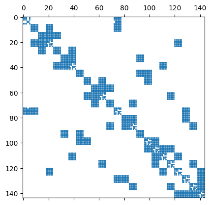

41. DG - Methods for elliptic problems#
The discretization of elliptic operators by DG is more tricky. The DG method involves discontinuous polynomials on elements, and thus is not a sub-space of \(H^1\).
We start from the Poisson equation $\( -\Delta u = f \)$
multiply by discontinuous test functions, integrate by parts on every element:
Since the normal-derivatives are continuous from element to element, we can combine the two element-boundary integrals on the same, internal edge. Boundary edges have to be treated separately, and are skipped here:
This is a non-symmetric bilinear-form for the self-adjoint Poisson operator, what we don’t like. The true solution \(u\) is continuous over edges. We are adding a zero term:
This form may not be coercive, and we have to add a stabilization term:
We introduced the notation of the jump term
Here, \(h\) is the element-size, \(p\) the polynomial order, and \(\alpha\) a sufficiently large stabilization parameter (typically 3 in 2D and 10 in 3D). This ‘sufficiently large’ condition is a drawback of the so called interior penalty version of DG/HDG, but there exist more sophisticated, robust versions.
41.1. Dirichlet boundary conditions#
The notation \([\![ u ]\!]\) for the jump term is adapted at the boundary, where it is just the value of \(u\). For consistency of the third and forth term in the case of Dirichlet conditions, one has to add corresponding terms to the linear-from:
from ngsolve import *
from ngsolve.webgui import Draw
mesh = Mesh(unit_square.GenerateMesh(maxh=0.3))
order = 2
fes = L2(mesh, order=order, dgjumps=True)
The integral
dx(skeleton=True)
leads to a loop over all internal facets, and gives access to both elements on this facet. Similarly,
ds(skeleton=True)
loops over boundary edges, and gives access to the element next to it.
u,v = fes.TnT()
h = specialcf.mesh_size
n = specialcf.normal(2)
alpha = 3
dS = dx(skeleton=True) # internal edges
def jump(u): return u-u.Other()
def mean(u): return 0.5*(u+u.Other())
a = BilinearForm(fes)
a += grad(u)*grad(v)*dx
a += (-n*mean(grad(u))*jump(v)-n*mean(grad(v))*jump(u))*dS
a += alpha*(order+1)**2/h*jump(u)*jump(v)*dS
a += alpha*order**2/h*u*v * ds(skeleton=True, definedon=mesh.Boundaries("left|bottom"))
a += (-n*grad(u)*v-n*grad(v)*u)* ds(skeleton=True, definedon=mesh.Boundaries("left|bottom"))
f = LinearForm(fes)
f += 1*v*dx
uD = 0.1*(x+y)
f += alpha*order**2/h*uD*v * ds(skeleton=True, definedon=mesh.Boundaries("left|bottom"))
f += (-n*grad(v))*uD*ds(skeleton=True, definedon=mesh.Boundaries("left|bottom"))
a.Assemble()
f.Assemble()
inv = a.mat.Inverse(fes.FreeDofs(), inverse="sparsecholesky")
print ("ndof: ", fes.ndof)
print ("non-zero(A):", a.mat.nze)
print ("non-zero(Inv):", inv.nze)
ndof: 144
non-zero(A): 3024
non-zero(Inv): 2340
gfu = GridFunction(fes)
gfu.vec.data = inv * f.vec
Draw (gfu, deformation=True, order=3);
import scipy.sparse as sp
import matplotlib.pyplot as plt
scipymat = sp.csr_matrix(a.mat.CSR())
plt.spy(scipymat, precision=1e-10, markersize=1);
